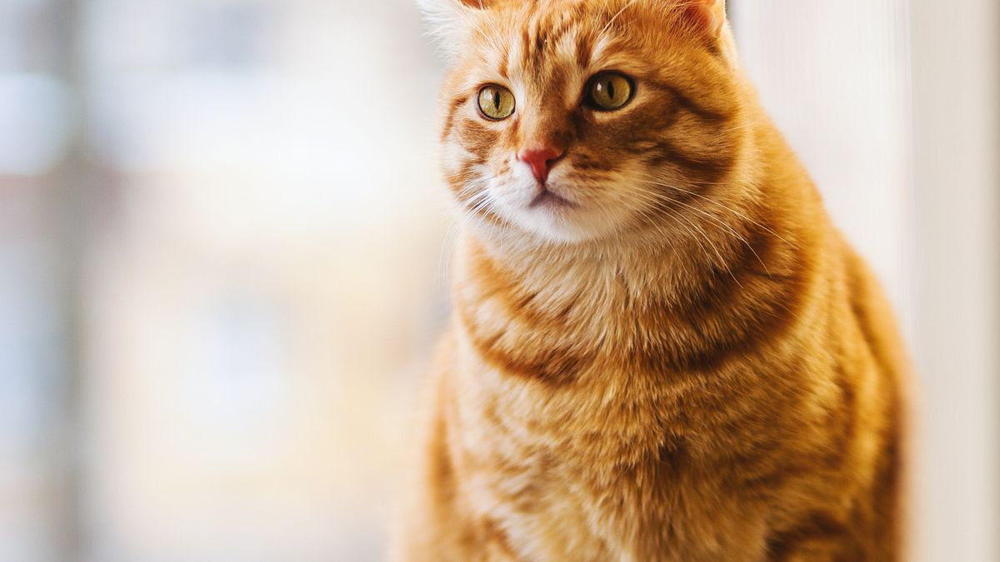

가족 규칙부터 정하기
손님 올 때: ①현관 5m 이내 접근 금지 ②첫 30분은 침실/이동장 ③인사는 앉아 있을 때만 5분. 방문마다 바뀌면 불안이 2배가 됩니다.
안전·휴식 공간 확보
소음 큰 손님(5명 이상)은 방문 전후 20분 휴식. 이동장 문을 닫되 30분마다 2분 환기. 물그릇은 분리 공간 안에 둡니다.
분리 공간에는 평소 쓰는 담요를 그대로 두면 냄새 안정에 도움이 됩니다. 백색 소음(선풍기 저속)을 켜 두면 현관 소음이 덜 전달되는 경우가 있습니다.
손님에게 부탁할 수 있는 것
- 현관에서 큰 소리·쿠션 던지기 자제
- 다가오기 전 3초 기다리기
- 음식·간식 무단 급여 금지
- 아이 손님은 1m 거리 유지
손님에게 '인사는 앉아 있을 때만'이라고 미리 카톡으로 보내 두면 당일 설명 부담이 줄어듭니다. 아이 손님에게는 반려동물 사진을 먼저 보여 주고 거리 규칙을 맞추세요.
방문 후
손님 퇴장 후 15분 조용한 시간+물. 그날 산책은 10분으로 줄여 회복을 우선합니다. 짖음·숨음·식욕 변화를 메모합니다.

방문 당일은 새로운 놀이·간식·산책 코스를 동시에 바꾸지 않습니다. 다음 날까지 평소 루틴을 유지하는 편이 회복에 유리합니다.
실전 적용 노트
손님 맞이는 '반려동물이 사교적이어야 한다'가 아니라 '모두가 안전해야 한다'가 기준입니다. 현관에서 인사·대화 5분을 두는 집이 많습니다.

손님에게 먼저 간식·장난감으로 접근하지 말라고 안내하세요. 무릎 위로 올라오는 것도 허용 범위를 미리 정합니다.
불안한 개체에게는 별도 방·캐리어 휴식 공간을 준비하고, 문에 '출입 자제' 메모를 붙입니다.
아이 손님이 오면 아이와 반려동물 사이에 어른이 항상 서 있게 하세요.
문 열림·벨 소리에 뛰쳐나가는 습관은 손님 오기 10분 전부터 짧은 휴식으로 몸을 가라앉히는 연습이 도움이 됩니다.
손님이 가면 그릇·물·휴식 공간을 원래대로 돌려 놓는 '마무리 3분'을 루틴에 넣으세요.
자주 오는 손님에게는 반려동물 이름·싫어하는 접촉(머리·등)을 한 번만 알려도 스트레스가 줄어듭니다.
큰 소음·파티는 별도 방+백색 소음 정도로 완화하고, 무리하게 사교 훈련하지 않습니다.
물어뜯기·짖음이 반복되면 손님 수를 줄이거나 시간을 30분으로 제한하는 것도 방법입니다.
이번 주 손님 맞이 체크리스트입니다. 사교성보다 안전이 기준입니다.
- 현관에서 5분 인사 후 반려동물을 만나게 했습니다.
- 손님에게 간식·장난감 접근 금지를 안내했습니다.
- 불안한 개체용 별도 휴식 공간을 준비했습니다.
- 아이 손님 사이에 어른이 항상 서 있게 했습니다.
- 손님 10분 전 짧은 휴식으로 흥분을 줄였습니다.
- 손님 후 그릇·휴식 공간을 3분 안에 원위치했습니다.
- 짖음·물어뜯기 반복 시 시간·인원을 줄였습니다.
- 자주 오는 손님에게 싫어하는 접촉 부위를 알렸습니다.
모든 손님이 반려동물을 좋아할 필요는 없습니다. 서로 안전한 거리가 오래 가는 방법입니다.
손님 맞이는 사교성보다 안전이 기준입니다. 현관 5분 인사, 간식·장난감 접근 금지 안내, 불안한 개체는 별도 휴식 공간을 준비하세요. 아이 손님 사이에 어른이 서 있게 하고, 손님 후 3분 원위치 루틴을 넣으면 다음 방문이 쉬워집니다. 모든 손님이 반려동물을 좋아할 필요는 없습니다.
손님에게 '첫 5분은 현관에서만' 안내하는 카드를 문에 붙여 두면, 매번 설명하지 않아도 됩니다.
마무리로, 이번 주에는 체크리스트 3개만 골라 2주 반복해 보세요. 작은 성공이 쌓이면 나머지는 자연스럽게 늘어납니다.
기록이 쌓이면 병원·상담 때 설명이 쉬워집니다. 한 줄 메모라도 같은 항목으로 이어 쓰는 것이 핵심입니다.
완벽한 루틴보다 80% 지켜지는 루틴이 오래 갑니다. 안 된 날은 원인 한 줄만 적고 다음 주에 조정하세요.
오늘 당장 하나만 고른다면, 체크리스트 맨 위 항목부터 시작해 보세요. 나머지는 다음 주로 미뤄도 괜찮습니다.
가족이 함께 돌본다면, 누가 했는지 체크박스 한 칸만 추가해도 누락·중복이 줄어듭니다.
검색으로 답을 찾기 전에 7일 메모를 먼저 정리해 보세요. 증상 설명이 훨씬 빨라지는 경우가 많습니다.
새 용품·새 사료·새 루틴은 동시에 바꾸지 않습니다. 한 가지만 바꾸고 5일 관찰하는 편이 안전합니다.
이번 달 목표는 '매일 완벽'이 아니라 '이번 주 3회 성공'입니다. 0회에서 1회로 바뀌는 것만으로도 충분한 진전입니다.
스트레스 신호(회피·짖음·숨 가쁨)가 보이면 시간을 반으로 줄이세요. 짧게 자주 성공하는 쪽이 학습에 유리합니다.
계절·이사·손님처럼 환경이 바뀌는 주에는 루틴을 단순화하세요. 필수 3개만 지키고 나머지는 다음 주로 미뤄도 됩니다.
사진 한 장이 긴 설명보다 나을 때가 있습니다. 같은 조명·각도로 남기면 변화 비교가 쉬워집니다.
병원 방문 전에는 '언제부터·얼마나 자주·무엇이 함께 변했는지' 3가지만 정리해도 상담이 수월해집니다.
정리하며
'귀여우니까 괜찮겠지'가 사고의 시작인 경우가 많습니다.
저는 손님 규칙을 반려동물 성격보다 먼저 씁니다. 손님이 바뀌지 않으니까요.
손님 오기 전날 반려동물 휴식 공간만 10분 점검해 보세요. 그날의 절반은 준비된 것입니다.
초보자가 자주 실수하는 포인트
- 방문마다 다른 규칙
- 현관에서 무리한 포옹 유도
- 손님 무단 간식
- 5명 이상 파티에 반려동물 동석
- 방문 후 휴식 없이 산책
체크리스트
- 위치·인사·간식 3줄 규칙
- 분리 공간·이동장 준비
- 현관 안내 스티커
- 퇴장 후 15분 휴식
- 반응 메모
자주 묻는 질문
- 손님을 꼭 만나게 해야 하나요?
- 아닙니다. 첫 30분 분리·5분 인사 제한이 기본입니다. 반려동물이 불안하면 그날은 만나지 않아도 됩니다.
- 짖음이 심하면 어떻게 하나요?
- 현관 접근을 더 줄이고 분리 시간을 45분으로 늘려 보세요. 방문 후 15분 휴식과 반응 메모를 이어가며 패턴을 확인하세요.
- 정기 손님이 자주 오면?
- 매번 같은 3줄 규칙을 지키면 적응이 빨라지는 경우가 있습니다. 규칙이 바뀌지 않는 것이 가장 중요합니다.
이 글은 초보자 기준으로 이해하기 쉽게 정리되었으며, 내용은 운영 과정에서 순차적으로 보완될 수 있습니다. 수의사 등 전문가의 진단·처치를 대체하지 않습니다.